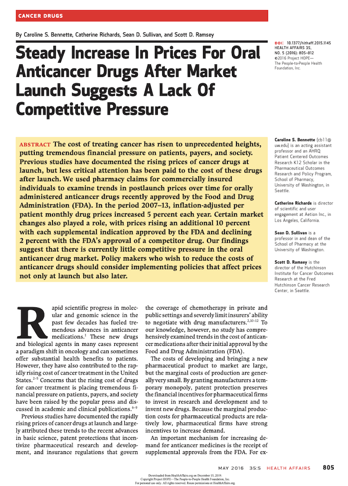

Publications
A complete list of all my publications (more than 100) is available on Google Scholar. Below are links to some of my favorites.
-
Which trials will enroll enough cancer patients?
(Hint: not all of them)
-

The prices of cancer drugs mostly go 📈 and in economically predictable ways
-
Please don't categorize your continuous variables

-
Is it cost-effective
to return secondary findings from genomic sequencing?
(Mostly yes)
-
How much earlier does PSA screening find prostate cancer?
(Roughly a decade)
-
Can we quantify patient preferences for the return of seconary genomic findings?
(Yep & here's how)
-
Most surgeons removing prostates have low annual caseloads
(& why that's scary)
-
Will you please
share your data with me?
(Mostly no 😔)
-
Which clinical trials will generate the most valuable evidence?
(Here's a new method to help answer)
-
Diminishing
marginal health benefits from new 💊 for cancer
(This one's my favorite)